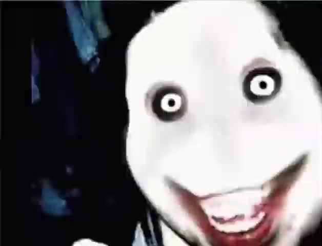

Поймайте отличие
Внимание — ваша суперсила.
Без регистрации. Просто игра.Один квадрат чуть-чуть отличается.
Сможете его заметить?
Найдите другой оттенок среди похожих.
Верный ответ откроет новое поле.
С каждым ответом разница всё меньше.
Немного фокуса.
И новый взгляд на привычные вещи.
Внимание — ваша суперсила.
Без регистрации. Просто игра.Всё хорошо. Наш загадочный гость уже ушёл.
Найдено отличий: 0
Теперь вы знаете наш маленький секрет.
Esc — закрыть